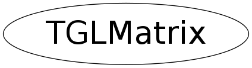

class TGLMatrix
TGLMatrix 16 component (4x4) transform matrix - column MAJOR as per GL. Provides limited support for adjusting the translation, scale and rotation components. This is part of collection of simple utility classes for GL only in TGLUtil.h/cxx. These provide const and non-const accessors Arr() & CArr() to a GL compatible internal field - so can be used directly with OpenGL C API calls - which TVector3 etc cannot (easily). They are not intended to be fully featured just provide minimum required.
Function Members (Methods)
public:
private:
| Bool_t | ValidIndex(UInt_t index) const |
Data Members
private:
| Double_t | fVals[16] | Column MAJOR as per OGL |
Class Charts
{kind=link}
{kind=link}
{kind=link}
{kind=link}

Function documentation
TGLMatrix(Double_t x, Double_t y, Double_t z)
Construct matrix with translation components x,y,z: 1 0 0 x 0 1 0 y 0 0 1 z 0 0 0 1
TGLMatrix(const TGLVertex3& translation)
Construct matrix with translation components x,y,z: 1 0 0 translation.X() 0 1 0 translation.Y() 0 0 1 translation.Z() 0 0 0 1
TGLMatrix(const TGLVertex3& origin, const TGLVector3& zAxis)
Construct matrix which when applied puts local origin at
'origin' and the local Z axis in direction 'z'. Both
'origin' and 'zAxisVec' are expressed in the parent frame
TGLMatrix(const TGLVertex3& origin, const TGLVector3& zAxis, const TGLVector3& xAxis)
Construct matrix which when applied puts local origin at
'origin' and the local Z axis in direction 'z'. Both
'origin' and 'zAxisVec' are expressed in the parent frame
TGLMatrix(const Double_t vals[16])
Construct matrix using the 16 Double_t 'vals' passed, ordering is maintained - i.e. should be column major as we are
void Set(const TGLVertex3& origin, const TGLVector3& zAxis, const TGLVector3& xAxis = 0)
Set matrix which when applied puts local origin at 'origin' and the local Z axis in direction 'z'. Both 'origin' and 'z' are expressed in the parent frame
void Translate(const TGLVector3& vect)
Shift matrix translation components by 'vect' in parent frame.
void MoveLF(Int_t ai, Double_t amount)
Translate in local frame. i1, i2 are axes indices: 1 ~ x, 2 ~ y, 3 ~ z.
void Move3LF(Double_t x, Double_t y, Double_t z)
Translate in local frame along all base vectors simultaneously.
void Scale(const TGLVector3& scale)
Set matrix axis scales to 'scale'. Note - this really sets the overall (total) scaling for each axis - it does NOT apply compounded scale on top of existing one
void Rotate(const TGLVertex3& pivot, const TGLVector3& axis, Double_t angle)
Update martix so resulting transform has been rotated about 'pivot' (in parent frame), round vector 'axis', through 'angle' (radians) Equivalent to glRotate function, but with addition of translation and compounded on top of existing.
void TransformVertex(TGLVertex3& vertex) const
Transform passed 'vertex' by this matrix - converts local frame to parent
void Transpose3x3()
Transpose the top left 3x3 matrix component along major diagonal Supported as currently incompatability between TGeo and GL matrix layouts for this 3x3 only. To be resolved.